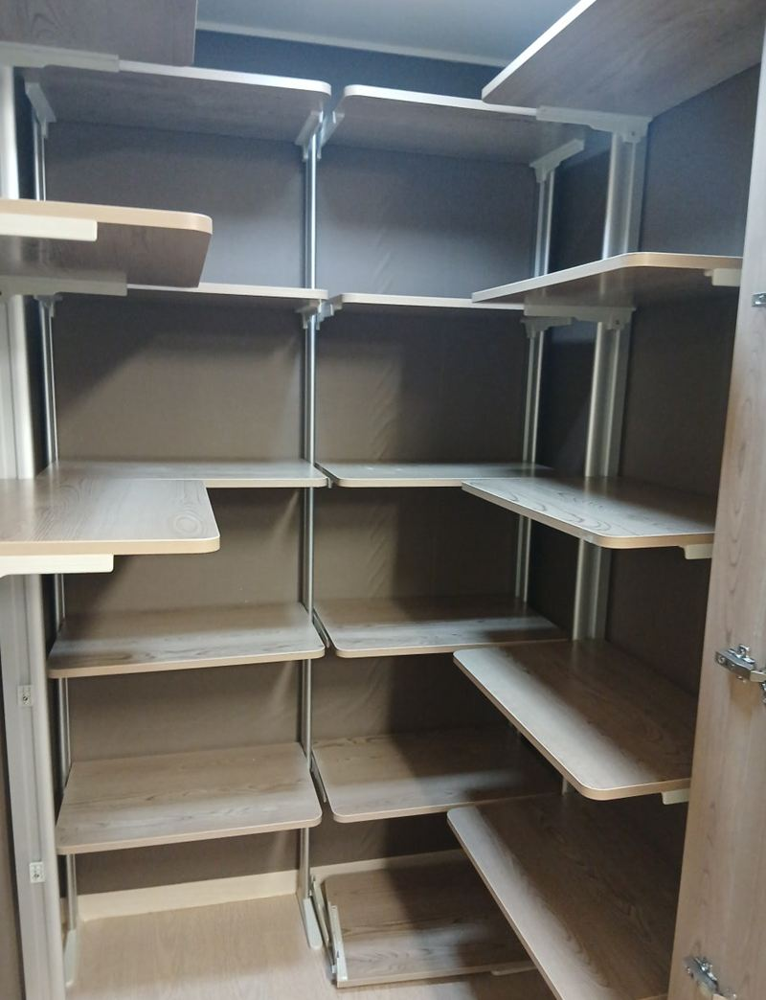
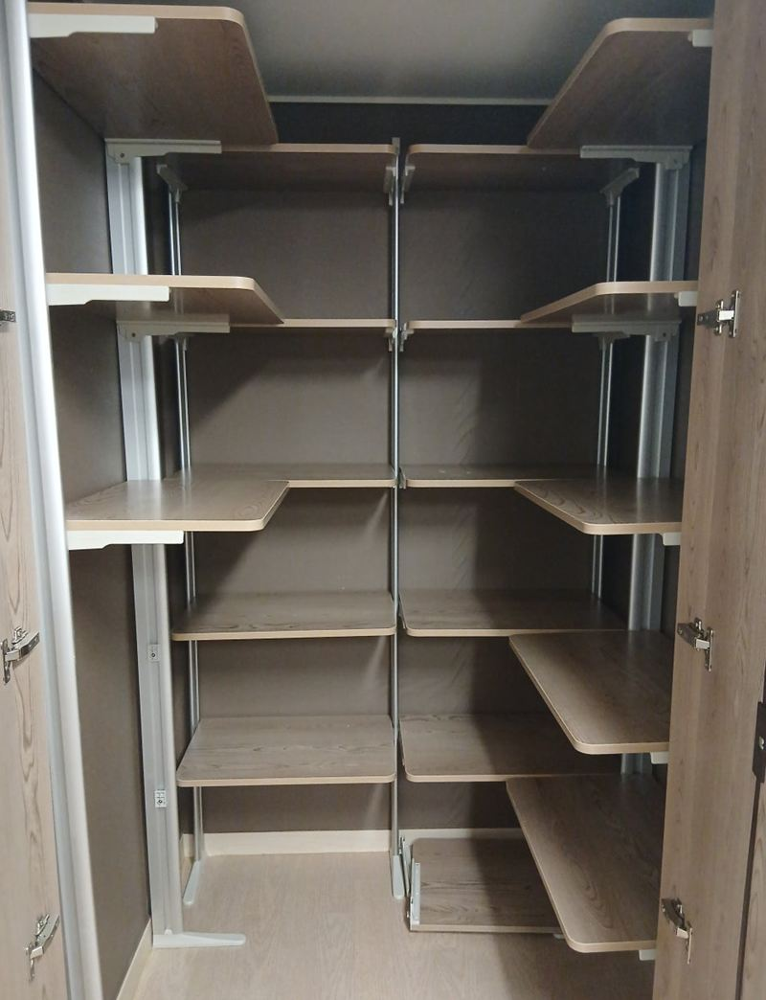
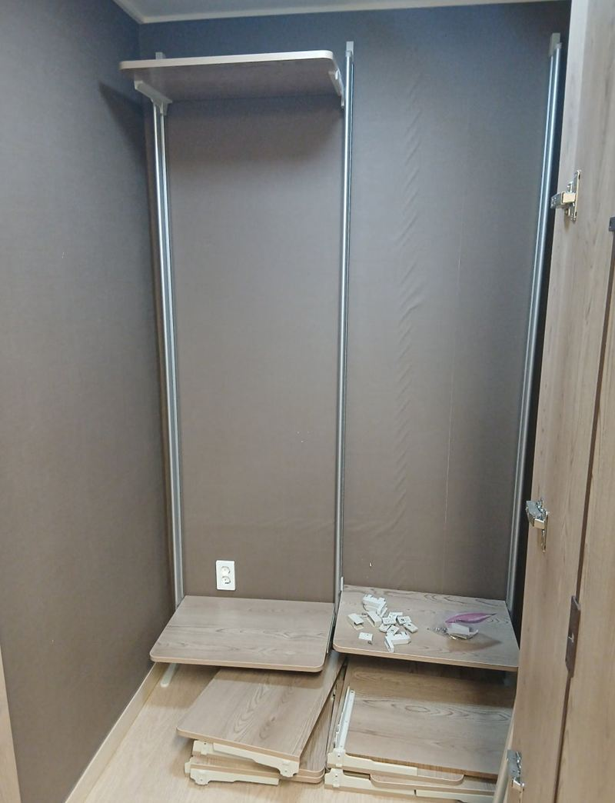
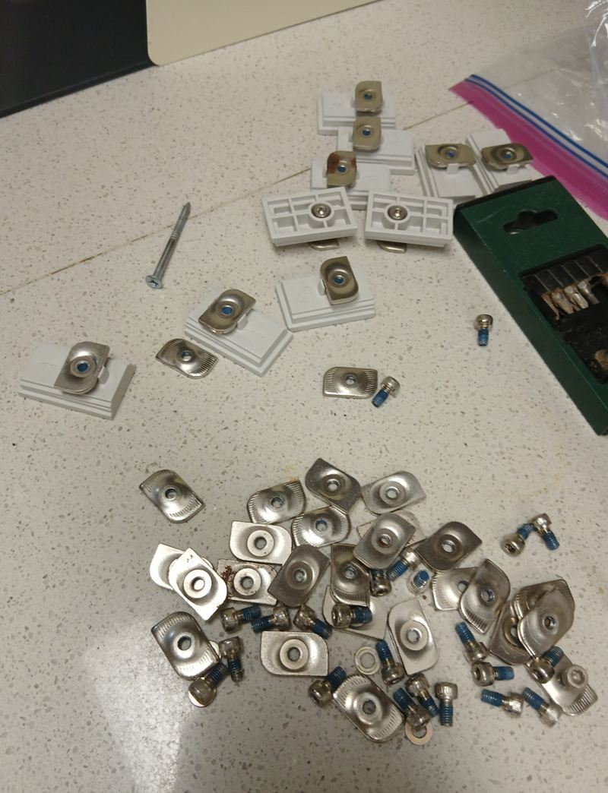
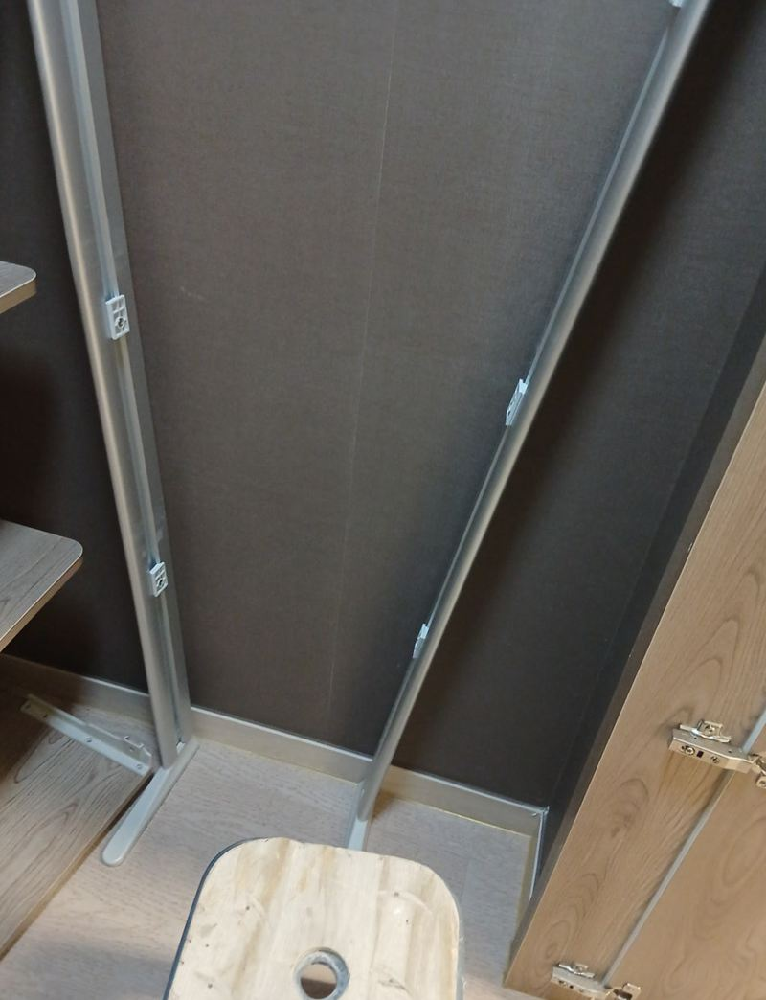
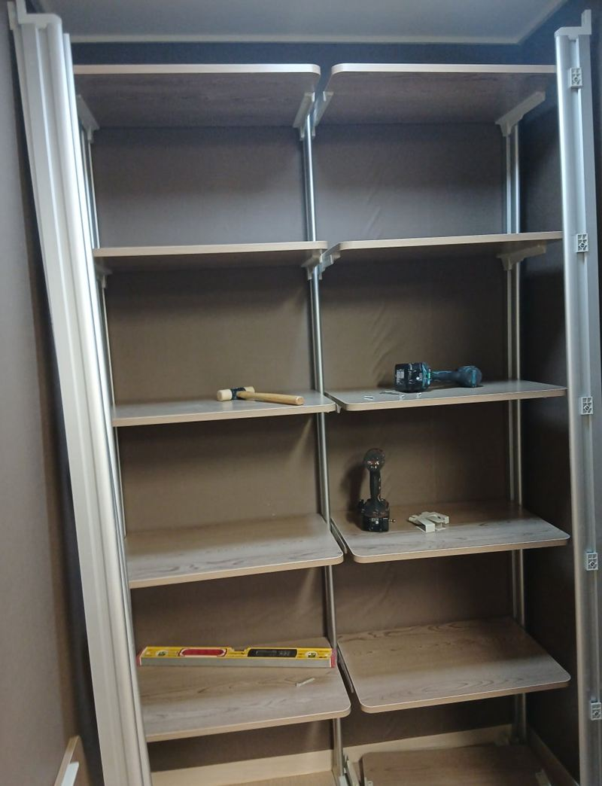
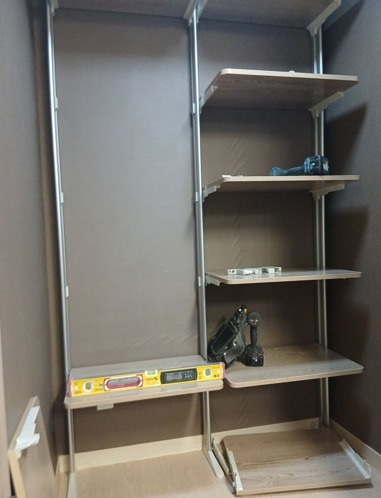

하남 펜트리장 이전 설치와 좁은 공간 재조립 방법


이전 전이전 후← 밀어서 전후 비교 →
"원래 다용도실에 쓰던 펜트리를 좁은 쪽으로 옮기려는데, 와 본 기사님마다 어렵다고만 해요. 거기에도 들어갈까요?" 하남 위례 아파트였어요. 원래 펜트리는 넓은 다용도실에 맞춰 만든 제품이라, 냉장고 옆 작은 다용도실로 옮기려면 모양을 바꿔야 했어요. 부속부터 빠짐없이 확인하고, 좁은 칸에 맞게 ㄷ자 구조로 다시 설계해 아래부터 차례로 조립했어요.
| 현장 | 하남 학암동(위례) 아파트, 냉장고 옆 작은 다용도실 |
|---|---|
| 요청 | 기존 펜트리장을 좁은 공간으로 옮겨 재설치 |
| 한 일 | 부속 전체 점검 → 공간 폭·깊이 측정 → ㄷ자 재설계 → 기둥 프레임 세우기 → 하부부터 선반 고정 → 수평 조정 → 벽 닿는 곳 패드 → 문짝 경첩 조정 |
| 구성 | 5단, 아래는 무거운 물건·위는 가벼운 물건 |
큰 펜트리를 좁은 곳으로 옮기려면
시스템 펜트리는 기둥과 선반을 끼워 맞추는 구조라 모양을 바꿔 다시 짤 수 있어요. 다만 원래 자리 크기에 맞춰 만든 제품이라 그대로 옮기면 들어가지 않아요. 새 다용도실 폭과 깊이를 재고, 냉장고 옆 빈 공간까지 쓰도록 일자 대신 ㄷ자로 배치를 바꿨어요.


펜트리장 재조립 순서
부속 확인
나사, 피스, 브라켓 중 하나라도 빠지면 재조립 후 흔들려요. 다행히 부속을 모두 보관해 두셔서 그대로 쓸 수 있었어요.

기둥 프레임 세우기
기둥을 먼저 세워 전체 틀을 잡았어요.

아래부터 선반 고정
좁은 공간은 위부터 조립하면 손이 안 들어가요. 하부 선반부터 차례로 고정하며 올라갔어요.


수평·흔들림·문짝
선반마다 수평계로 맞추고, 벽에 닿는 곳엔 실리콘 패드를 붙여 흔들림을 줄였어요. 좁은 공간에서도 문이 부드럽게 열리도록 경첩까지 조정했어요.
요청에 따라 5단으로 맞추고, 아래 칸은 생수·세제처럼 무거운 것, 위 칸은 식료품·수건처럼 가벼운 것을 두도록 높이를 나눴어요. 고객분은 "냉장고 옆 공간이 훨씬 깔끔해졌다"며 만족하셨어요.
펜트리 이전 전에 챙길 것
- 부속 따로 보관분해할 때 나온 피스·브라켓은 봉투에 모아 두세요. 하나만 없어도 재조립이 어려워요.
- 새 공간 치수천장 높이, 벽 깊이, 문 여는 공간을 재 두면 배치를 미리 정할 수 있어요.
- 수평바닥이 기울어 있으면 선반이 틀어져 문이 안 닫혀요. 수평 확인은 꼭 해요.
- 이사 일정이사 날 바로 쓰려면 이삿짐이 들어오기 전에 조립하는 게 편해요.
설치가 어렵다는 말을 들었다면
시스템 펜트리는 처음 설치한 업체가 아니면 조립을 꺼리는 경우가 있어요. 공간이 좁아 손이 안 들어가거나, 원래 모양 그대로는 안 들어가기 때문이에요. 이럴 때는 배치를 바꿔 다시 설계하면 대부분 해결돼요.
이번 현장도 일자 배치를 ㄷ자로 바꾸고 아래부터 조립하는 방식으로 풀었어요. 기둥 길이와 선반 수를 새 공간에 맞게 다시 계산하는 게 핵심이에요. 사진과 치수만 있으면 가능한지 먼저 말씀드릴 수 있어요.
펜트리장 이전 질문
부속을 잃어버렸어요.
규격이 맞는 부속을 구해 쓸 수 있어요. 기둥과 선반 연결부 사진을 보내 주세요.
단 수를 늘리거나 줄일 수 있나요?
기둥 길이 안에서 선반 수와 높이를 바꿀 수 있어요.
문짝이 있는 펜트리도 되나요?
네, 문짝 경첩 위치까지 새 공간에 맞춰 다시 조정해요.
선반이 부족하면 새로 만들 수 있나요?
모자란 선반은 크기에 맞춰 새로 재단해 끼울 수 있어요.
장식장·신발장 이전도 하나요?
펜트리 말고도 장식장, 신발장 이전과 재조립도 해요.
분해도 맡길 수 있나요?
이전 집에서 분해부터 맡기시면 부속 분실 걱정이 줄어요.
다른 싱크대·수납장 현장
옮길 펜트리와 새 공간을 각각 찍고, 대략의 폭을 알려주세요.
전화 상담 010-4517-9872